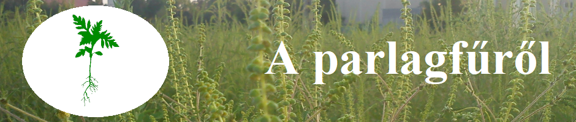

|  |
|---|
TerjedéseA faj Európában nem őshonos. Eredeti élőhelye Észak-Amerika déli része. 1878-ban tűnt fel először Svájcban. Az I. világháború környékén kezdett elterjedni Európában. Magyarország területén az 1920-as években Somogy megye déli részén tűnt fel először. Innen származik korábbi neve, a rácfű. Később az áruszállítási útvonalak mentén szétterjedt a déli megyékben, majd az ország északi része felé terjedt, kezdetben lassan, mivel a növénynek alkalmazkodnia kellett az európai éghajlathoz. Amikor ahhoz hozzászokott, robbanásszerűen terjedésnek indult. A parlagfű a hetvenes évekig nem okozott jelentős mértékben allergiát. Az azóta eltelt évtizedekben pollenje koncentrációja a levegőben nagymértékben megnövekedett. Európában jelentős mértékben elszaporodott, és komoly népegészségügyi problémát okoz. Magyarországon a létező 350 gyomnövény között a legelterjedtebbé vált. Utak, lakótelepek, nagyberuházások építésekor a talajrendezési munkák során a termőtalaj előtűnik, a felszínre kerülő nyers talajon évekig a parlagfű egyeduralkodó. Terjedését segítő tulajdonságok:
Emberi tényezők:
|